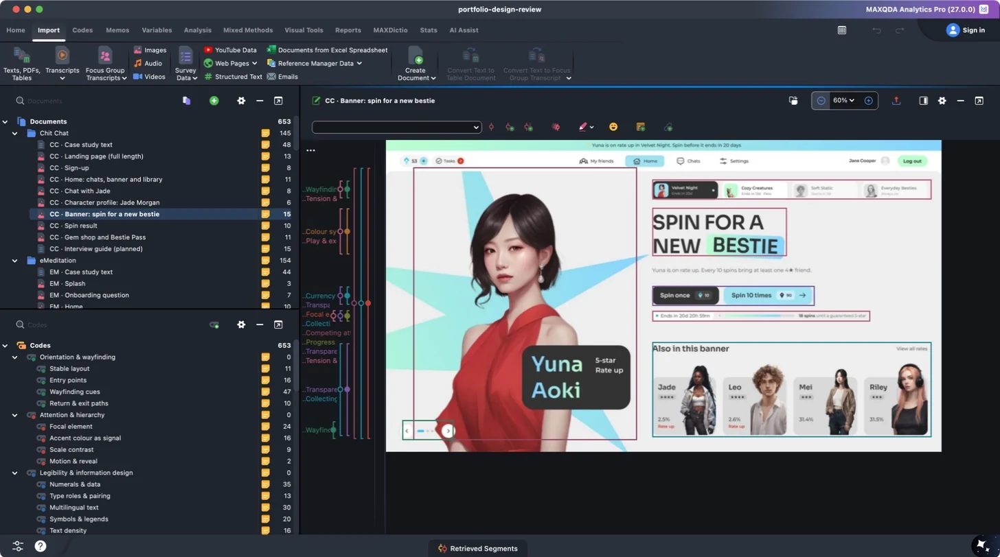
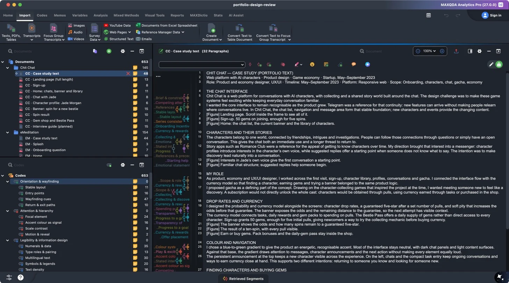
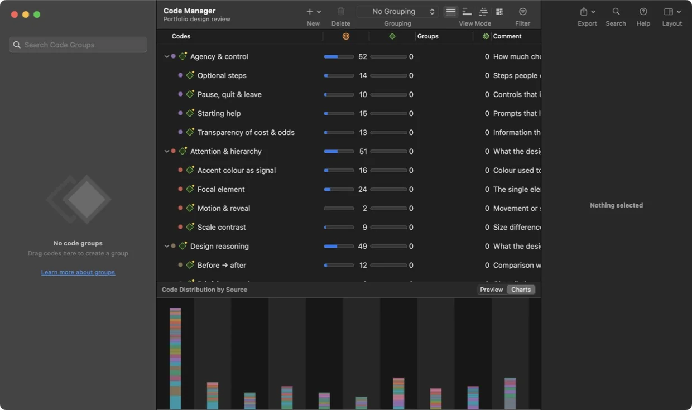
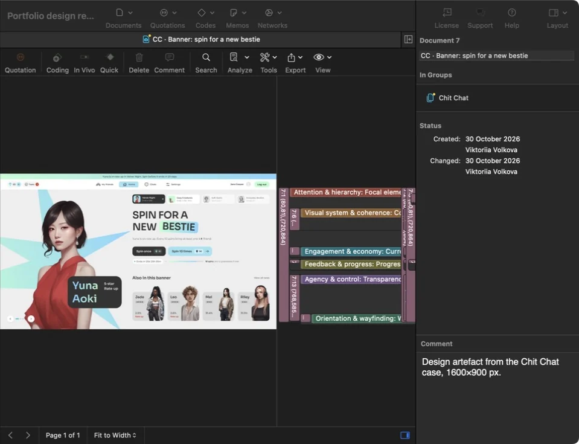

About the review
How the review was done
Five projects, read in full and coded region by region: every case text, every design file shown in the portfolio and a planned interview guide for each project.
- documents
- 84
- design artefacts
- 74
- codes in 12 families
- 61
- coded fragments
- 350
- code assignments
- 653
- memos
- 8
- document groups
- 5
Materials reviewed
Each project contributes three kinds of document: the full case-study text as it appears in the portfolio, the design artefacts themselves (screens, menu pages, posters, panels, print files and presentation mockups) and an interview guide for the sessions that come next. Text is coded passage by passage; images are coded as regions drawn on the file.
| Project | Documents | Artefacts | Fragments | Codes applied |
|---|---|---|---|---|
| Chit Chat | 10 | 8 | 77 | 145 |
| eMeditation | 17 | 15 | 84 | 154 |
| World · Triptych | 5 | 3 | 30 | 52 |
| Việt Home | 26 | 24 | 87 | 162 |
| KSI | 26 | 24 | 72 | 140 |
The code system
Twelve families describe what a design does, why it was made that way, what it might cost and what still needs evidence. Open a family to see its codes and how often each was applied.
Orientation & wayfinding84
How a layout tells people where they are, where things live and how to get back.
- Stable layout11
- Entry points16
- Wayfinding cues47
- Return & exit paths10
Attention & hierarchy51
What the design asks people to look at first, and how strongly.
- Focal element24
- Accent colour as signal16
- Scale contrast9
- Motion & reveal2
Legibility & information design114
Whether text, numbers and symbols can be read and compared.
- Numerals & data35
- Type roles & pairing13
- Multilingual text30
- Symbols & legends20
- Text density16
Agency & control52
How much choice people keep: to skip, stop, understand the cost or leave.
- Optional steps14
- Transparency of cost & odds13
- Pause, quit & leave10
- Starting help15
Feedback & progress26
Signals about what has happened, what is happening and how far there is to go.
- Completion response4
- History & streaks10
- System states5
- Progress to a goal7
Visual system & coherence87
Repeated decisions that make many pieces read as one family.
- Colour system23
- Recurring motif27
- Typographic system10
- Series consistency17
- Brand touchpoints10
Meaning & context60
Associations that depend on culture, community or personal history.
- Cultural references13
- Community codes18
- Localisation9
- Emotional statement20
Engagement & economy36
Mechanics that invite people to return, collect or pay.
- Collecting & discovery13
- Currency & rewards11
- Offer placement8
- Onboarding incentive4
Tone & emotional register31
The mood the design sets.
- Calm & restraint4
- Play & excitement14
- Tension & urgency4
- Encouragement9
Design reasoning49
What the designer says about precedents, constraints and intent.
- References & precedents3
- Brief & constraints6
- Stated intention10
- Before → after12
- Scope & role18
Trade-offs & risks31
Plausible costs of a decision, recorded so they can be tested.
- Competing attention9
- Spending pressure7
- Ambiguous reading10
- Accessibility risk5
Validation plan32
What still needs evidence from real people, and how to get it.
- Task to observe22
- Evidence gap10
Across the five projects
The same codebook applied to very different work. Darker cells mean more code assignments.
| Code family | Chit Chat | eMeditation | World · Triptych | Việt Home | KSI | Total |
|---|---|---|---|---|---|---|
| Orientation & wayfinding | 26 | 18 | · | 30 | 10 | 84 |
| Attention & hierarchy | 11 | 14 | 7 | 3 | 16 | 51 |
| Legibility & information design | 2 | 22 | · | 65 | 25 | 114 |
| Agency & control | 21 | 28 | · | · | 3 | 52 |
| Feedback & progress | 7 | 18 | · | 1 | · | 26 |
| Visual system & coherence | 5 | 11 | 15 | 29 | 27 | 87 |
| Meaning & context | 6 | 6 | 16 | 3 | 29 | 60 |
| Engagement & economy | 30 | 3 | · | 2 | 1 | 36 |
| Tone & emotional register | 7 | 13 | 2 | 1 | 8 | 31 |
| Design reasoning | 10 | 5 | 5 | 18 | 11 | 49 |
| Trade-offs & risks | 11 | 6 | 4 | 4 | 6 | 31 |
| Validation plan | 9 | 10 | 3 | 6 | 4 | 32 |
In MAXQDA and ATLAS.ti
Set up and checked in MAXQDA Analytics Pro 27.0.0 and ATLAS.ti 26.2.0 on 30 October 2026. Both programs hold the same 84 documents, 61 codes, 653 coded segments, 8 memos and 5 document groups.




Download the projects
- MAXQDA project (.mqda) ↓MAXQDA 27 · Home → Open Project · 12 MB
- ATLAS.ti project bundle (.atlasti) ↓ATLAS.ti 26 · Project → Import Project · 10 MB
- ATLAS.ti exchange file (QDPX) ↓REFI-QDA file exported from MAXQDA for ATLAS.ti
- REFI-QDA project (QDPX) ↓Opens in MAXQDA and other REFI-QDA tools
- Codebook only (QDC) ↓Code definitions for a new project
QDPX (REFI-QDA) carries documents, coded regions, comments, memos and document groups between programs; QDC carries only the code definitions.
Notes on the exchange
- One coded fragment can carry several codes. The review has 350 fragments with 653 code assignments; MAXQDA and ATLAS.ti store each assignment as its own segment or quotation, so both show 653.
- ATLAS.ti reads the end of a text selection one character earlier than MAXQDA, so the ATLAS.ti exchange file moves each text end position by one character. ATLAS.ti flagged three passages that end exactly at the end of a document as possibly shifted; check those three if exact boundaries matter.
- Code counts describe the materials, not people. No interviews have taken place yet.
How the notes were organised
Each note keeps four things separate: what is visible in the design, what the designer intended, a possible explanation and a way to check it. The codes are starting labels for these notes. They will need another look once there are real interviews to analyse.
When interviews are available, read each one in full before coding. Compare answers within the same project, keep disagreements and make a note of expectations that might influence the reading. Braun and Clarke’s methodological guidance explains why analysis involves returning to the material and revising an interpretation. The current codebook is a starting point for the design review, not a scoring system for interviews.
Planning the interviews
IDI means an individual in-depth interview; FGI means a focus-group interview. The plan starts with a pilot of 4–6 individual interviews for each project. After that, review which perspectives are missing and whether the conversations are detailed enough. This number is a starting point, not a promise that it will be sufficient. Malterud et al. (2016) discuss how the usefulness of a sample depends on the study’s aim, the people taking part and the quality of the conversations.
Use individual sessions to watch someone find information or work through a task. Use group discussions to explore wording and different readings of the design, after collecting private responses first. A group agreeing on an answer does not tell us whether each person could complete the task alone.
Before the first interview
Before inviting anyone, decide who will hold the data, where it will be stored, when it will be deleted and how someone can withdraw. Ask separately for permission to record a session and to publish a quote in the portfolio. Keep contact details separate from interview notes. Each project includes a guide for these future sessions.